EmberConf 2017 Recap
Ben Limmer
@blimmer
4/11/2017
Ember Community Survey
Keynote
Talk by Talk
Questions from the  gallery
gallery
Ember Community Survey
nearly 1600 responses, done every year with emberconf
By Version
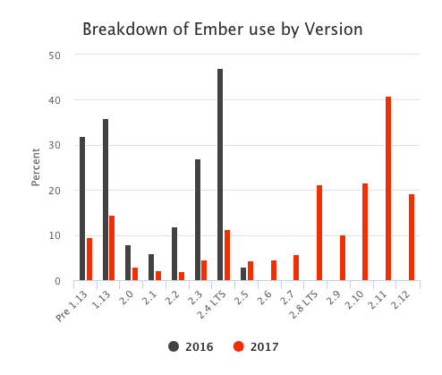
many people are using LTS versions, though lots keep up to date with the most current, likely because of glimmer 2.
“How can we improve Ember?”
Performance was a common theme regardless of experience with Ember. Documentation and guide improvement requests were more common from developers with less Ember experience while requests for tree shaking, routable components and mobile support were more prevalent among experienced Ember developers.
“How long have you been working with Ember?”
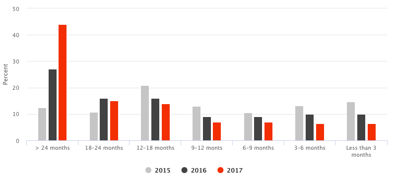
almost half of survey participants using ember for > 2 years
“How many people use your apps?”
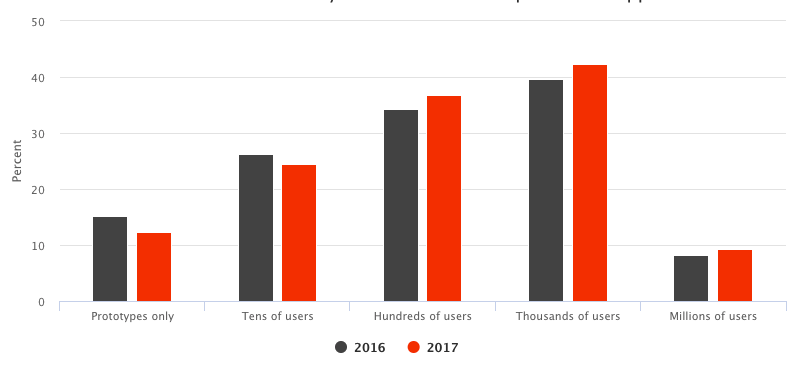
most target hundreds or thousands of users
“What does the server stack look like?”
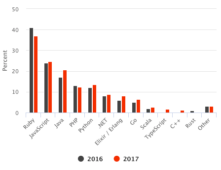
Keynote
A great summary since the last EmberConf and what’s next.
Speakers
- Yehuda Katz (Ember, RoR, jQuery core teams, yarn, hbs, etc, etc)
- Tom Dale (Ember Core Team)
Main Topics
- Things that went well in 2.x
- Glimmer Deep(ish)-dive
- Things that didn’t go well in 2.x
- The future of Ember
What Went Well
Glimmer
- The third iteration of the rendering engine used by ember
- Now available stand-alone as glimmer.js
- glimmer 2 was a drop-in replacement
Glimmer Specifics
- No more root attribute (template is the root)
- True es6 class syntax
- Typescript
- es6 getters and setters (no
.getand.setin glimmer)
Glimmer Performance
- Ahead of time wire-format to describe DOM operations (slim)
// Top-Level Template ["open-element","h1",[]] ["flush-element"] ["append",["unknown",["title"]],false] ["close-element"] ["text","\n"] ["open-element","div",[]] ["static-attr","class","posts"] ["flush-element"] ["text","\n"] ["block",["each"],[["get",["posts"]]],[["key"],["id"]],0] ["close-element"] - ‘boot up fast and stay fast once booted’
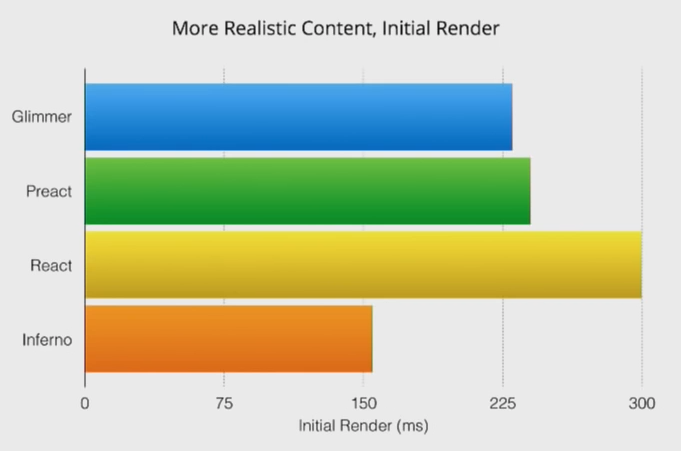
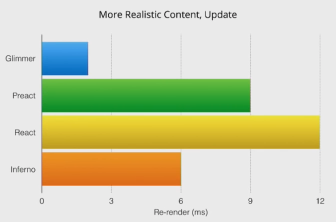
Future of Glimmer and Ember
- “this is the component API we want for Ember”
- “ember is still the choice for big web applications”
- “glimmer is the choice for small mobile apps that need to be very performant”
What Did Not Go Well
- communication of…
-
<angle-bracket>syntax - routable components
- pods
-
How to Mitigate in the Future
- Unlock experimentation via a small kernel with hooks
- Early adopters experiment with the add-on
- Once things are drop-in compatible, consider merging
Future of Ember
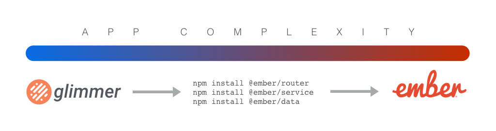
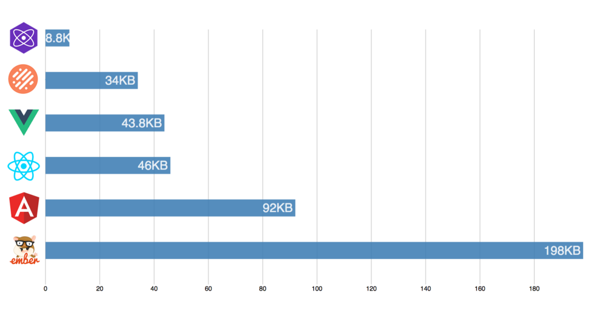
Questions?

Talk by Talk
Going Progressive with Ember
- Samanta de Barros
- Engineer at WyeWorks in Uruguay
What is a progressive app?
- native-app like functionality from a web app
- looks good
- installs on device (fast second boot)
- works offline
- is fast
watch this talk if interested in…
- app manifests
- appcache
- service workers
- localforage
- offline web apps
A Neurobiologist’s Guide to Mind Manipulation
- Casey Watts
- Engineer at Heroku, background in Software & Psychology
Discusses how to…
- improve processing emotions
- improve processing thoughts
- interact more effectively with coworkers
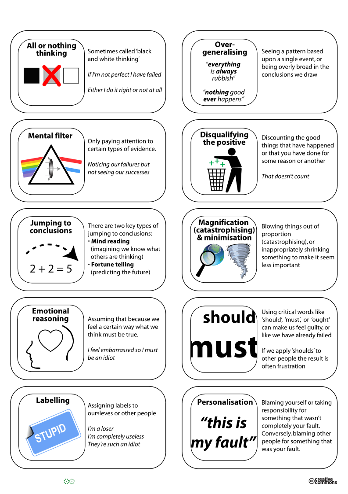
watch this talk if interested in…
- something more non-technical
- learning more about “cognitive restructuring”
Understanding JavaScript Performance
- Godfrey Chan
- Ruby on Rails and Ember Core Team Member
also gem install canada
>> [].empty_eh?
=> true
>> [1,2,3].empty_eh?
=> false
>> [].respond_to_eh?(:empty_eh?)
=> true
>> aboot Object.new
=> "#<Object:0x007f802b8b92c0>"
Discusses how to…
- debug performance in
- your code
- the framework
- in v8
watch this talk if interested in…
- JavaScript performance debugging techniques
- the performance tab of Chrome dev-tools
- v8 internals
Counter-spells and the Art of Keeping Your Application Safe
- Ingrid Epure
- Full-Stack Engineer at Intercom in Scotland
Discusses:
- how to use the browser’s content security policy to mitigate xss
- dangers of
htmlSafe - using helpers to sanitize html content in user input
- OWASP Top 10 List
watch this talk if interested in…
- securing a front-end application
- common attacks on web apps
Rebuilding Tumblr as a Single Page App
- Oli Griffiths
- Engineer at Tumblr
- tumblr is not an ember app
- done as part of a hack-day
- created POC in Ember and React
- testament to ember’s add-on community and ease-of-use
watch this talk if interested in…
- addressing how to rebuild an app with ember
Animate the Web with Ember.js
- Jessica Jordan
- Biologist turned Front-End Engineer
Discusses:
- how to create an animated comic in ember
- keyframe animation
- web animation API

watch this talk if interested in…
- HTML5 Canvas
- web animation API
- comics and drawing
Data Loading Patterns with JSON API
- Balint Erdi
- Ember Consultant in Budapest
Discusses:
- the basics of ember-data’s API
- data fetching strategies (lazy fetching, preloading, side-loading)
- searching
- sorting
- pagination
watch this talk if interested in…
- how to use ember-data
- learning how to expose data from an API to a front-end app
- JSON API
- server-side sorting, searching and pagination
Higher Order Components
- Miguel Camba
- Ember, Ruby and Elixir Consultant in London
this presentation was 
Discusses:
- utilizing contextual components
- using
yield,hashandcomponenthelpers - focuses on how to compose components to keep them clean
watch this talk if interested in…
- how to build clean ember components
- composability concepts in ember
- creating clean separation between container and presentational components
shameless plug…
end of day 1!
questions?
Empowering the Next Million Creators
- Edward Faulkner
- Ember Core Team member, creator of Liquid Fire (ember’s animation library)
this presentation is potentially very relevant to the future of the ibotta website

Our mission is to build a Card Ecosystem based on Open Web technologies and Open Source ethos that fights back against rampant lock-in.
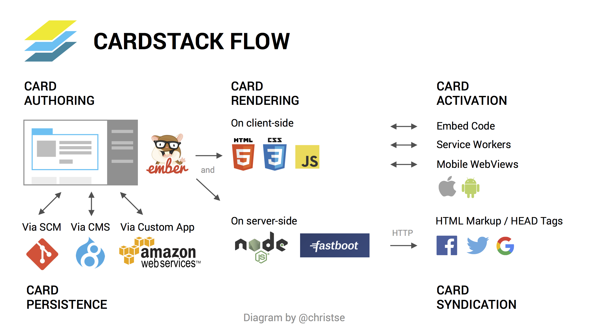
cardstack allows you to…
- use a CMS (like Drupal) for data persistence
- allow a web developer to set up the template for the page
- allows (non-technical) users to edit content in-line
- leverage git to “preview” changes
- leverage elastic search for automatic full-text-search on content
watch this talk if interested in…
- building an app that will be frequently edited / appended after delivery
- leveraging the power of a CMS to drive the content for an ember app
- helping build the future of ibotta.com
SVG Animation and Interaction in Ember
- Jen Weber
- UI/UX Developer at BioBright
Discusses how to…
- create an SVG-driven component
- make an SVG more accessible
- optimize SVGs
watch this talk if interested in…
- SVG
- optimization
- creation
- animation
Mastering Ember from the Perspective of a N00b
- Madison Kerndt
- Technical Associate at TechStars, attended Turing School
Discusses:
- the challenges of learning ember as a self-proclaimed n00b in Turing School
- dreyfus model of skill acquisition
- novice
- competence
- proficiency
- expertise
- mastery
watch this talk if interested in…
- hearing the challenges of approaching a framework with no dev background
- learning more about the dreyfus model
State, Time and Concurrency
- Alex Matchneer
- Ember Core Team Emeritus, FutureProof Retail
Discusses
- “the user is an async operation”
- ember-concurrency
- utilizing derived state from
tasks *
watch this talk if interested in…
- getting rid of flags in your code like
isSending - ember-concurrency (srsly if you’re not using it, look into this talk)
- “the fourth dimension” of async tasks
- why “the user is an async operation”
Confessions of an Ember Add-on Author
- Lauren Tan
- Engineer at Netflix
Discusses:
- What (generally speaking) makes a good OSS project:
- “It solves a useful problem”
- “People are convinced your solution is the best for their problem”
- Provides a good Developer Experience:
- Good documentation
- Demo
- Good testing
- Clear Configuration Instructions
watch this talk if…
- you have (or are considering) open-sourcing a project
- you want to know more about how an ember add-on is built
- you want to know more about ember-cli’s hooks for add-ons
Spin Me a Yarn
- Serena Frisch
- Product Engineer at Intercom
started off with a most excellent joke about
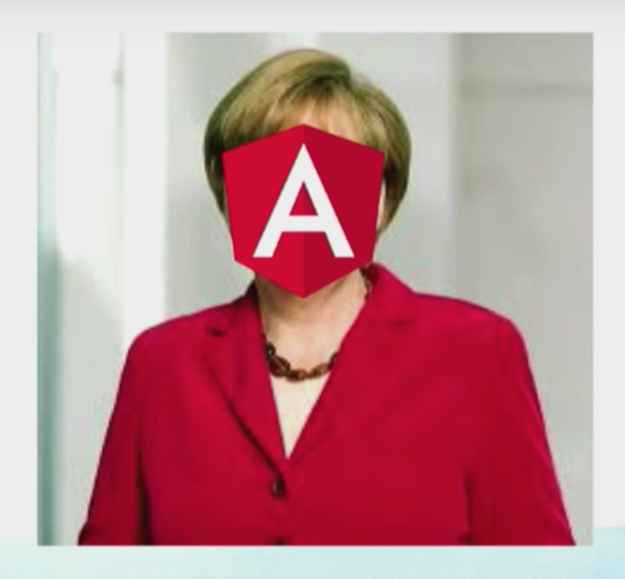
Discusses…
- issues with npm (and why they’re issues)
- non-determinism
- performance
- how yarn is different
- consistent, reliable dependency resolution
- how a
npm installworks, step-by-step - how a
yarn installworks, step-by-step
watch this talk if…
- you don’t know about how yarn is different from npm
- you’re not using yarn yet
- you want to know why npm is, by definition, non-deterministic
- you want to learn how npm / yarn install work
An Animated Guide to Ember Internals
- Gavin Joyce
- Engineer at Intercom
Discusses:
- the fundamental difference between a traditional and closure action
- how the glimmer VM builds and flushes a stack (with amazing animations)
watch this talk if…
- you’re curious about how the glimmer VM works
- why closure actions are exciting in ember
- you want to be wow-ed by great animations
Closing Keynote
- Sarah Mei
- Founder of RailsBridge, Consultant, Dev
a really great talk 
if you’re a dev working on a team, watch it!
Codebase as a home
our code is a place we live
Codebase as a home
- it’s not something to be “finished”
- it should be “livable for the devs who live there”
- this will look different depending on the kinds of devs who live there
- getting a new team member is like getting a new roommate
- they might bring their old couch

- they will change what it’s like to live there
- they might bring their old couch
“Hoarding” parallel
- clutter/problems in a codebase appear over time, not all at once
- cleaning up all at once will not fix the problem
- e.g. with a big refactor or rewrite
- the people who live there will not change
Cleaning Up Tech Debt
- do it piece-by-piece
- it’s like cleaning your house
- make it part of your routine to clean as you go
- don’t make things worse
- value improvement over consistency
- do refactoring inline
- clean up problems as you see them
Dealing with Tech Debt
Don’t…
- Ask for permission. This is part of your job!
- Ask for forgiveness. but, learn everytime!
Do…
- Ask for advice on refactoring. but, don’t always take the advice!
- Work together because you all live here!
watch this video if…
- you’re a developer working on a team
- you’re working for a company that’s high-growth
Thank you for listening! 
Questions?
Slides can be found at http://bit.ly/emberconf-2017
Ben Limmer
@blimmer